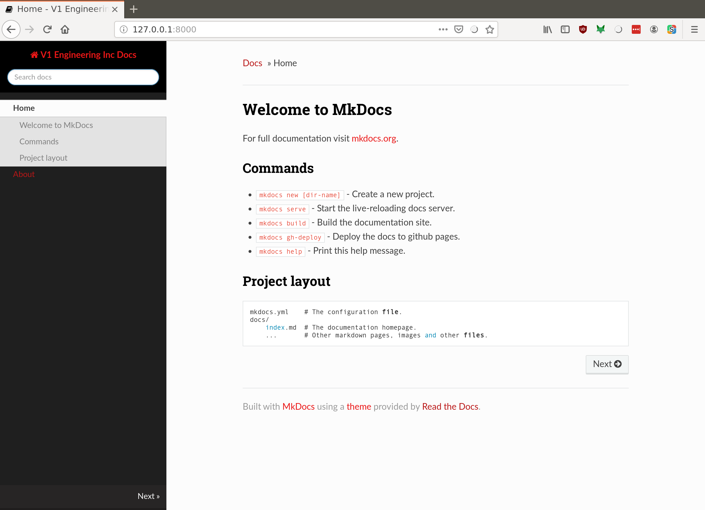

Welcome to MkDocs
For full documentation visit mkdocs.org.
-
Pipeline figured out from .md files to webpage (github.io page).
-
DONE Some kind of images posted, and also images from v1engineering.com.


-
DONE Image resizing.
- I found there are some unofficial syntaxes to get images to resize, but they don't seem to work here. Maybe there's a python-markdown plugin? But that will bring it's own can of worms. Just using an img tag seems to work though. More info
-
DONE Get links working in the documents to sections and pages and v1engineering.com
-
Menu organization, how deep.
https://www.mkdocs.org/user-guide/writing-your-docs/#configure-pages-and-navigation
This sort of works. I had to install a newer version of mkdocs (0.16 was too old).
The organization is in mkdocs.yml, and nesting more than two is funky. Also, top levels can't be pages, so it's really more like just two deep. Maybe another theme would help?
-
style/css/theme.
-
DONE. CC-BY-SA info in the pages.
Bonus stuff
-
Embed videos
Doesn't seem to work :(
[[embed url=http://www.youtube.com/watch?v=6YbBmqUnoQM]]
-
Emojis?
:smile:
-
Tables
This helps a lot: https://www.tablesgenerator.com/markdown_tables#
Tables Are Cool col 1 is left-aligned $1600 col 2 is centered $12 col 3 is right-aligned $1 -
Favicon: https://www.mkdocs.org/#changing-the-favicon-icon
Commands
mkdocs new [dir-name]- Create a new project.mkdocs serve- Start the live-reloading docs server.mkdocs build- Build the documentation site.mkdocs gh-deploy- Deploy the docs to github pages.mkdocs help- Print this help message.
Project layout
mkdocs.yml # The configuration file.
docs/
index.md # The documentation homepage.
... # Other markdown pages, images and other files.